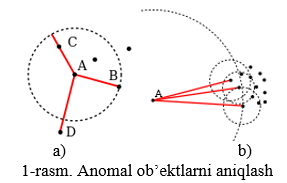

1.18. LOF (Local Outlier Factor)
LOF (Local Outlier Factor) asosida anomal ob’ektlarni aniqlash
Berilgan \(A=\{a_{ij}\}_{mn}\) jadvalda \(E_{0} = (S_{1}, \ldots, S_{m})\) ob’ektlarning \(n\) miqdoriy alomatlar bo‘yicha tavsifi keltirilgan. Ikkita \(S_{u}, S_{v} \in E_{0}\) ob’ektlar o‘rtasidagi masofa \(\rho(x,y)\) e’vklid metrikasi bilan hisoblanadi. Tanlanmaning \(S\) ob’ektining \(k\) ta eng yaqin qo‘shnilarini \(N_{k}(S)\) bilan,
\(k\text{–}dis(S)\) orqali \(S\) ob’ektidan \(k\)–yaqin qo‘shnigacha bo‘lgan masofani belgilaylik.
\(S_{v}\) ob’ektidan \(S_{u}\) ob’ektgacha erishiluvchi masofa quyidagicha aniqlanadi:
(1.a-rasmga qarang). \(S_{u}\) ob’ektga erishuvchanlikning lokal zichligi quyidagicha aniqlanadi:
ya’ni \(S_{u}\) ob’ektga uning qo‘shnilaridan erishish masofalarining o‘rta arifmetikiga nisbatan teskari hisoblanadi.
Erishishning lokal zichligi qo‘shnilarning erishish lokal zichligi bilan quyidagicha taqqoslanadi:
ya’ni qo‘shnilarga erishishning o‘rtacha lokal zichligini ob’ektning o‘zining erishish lokal zichligiga bo‘lish orqali.
Agar \(LOF_{k}(S_{u})\), 1 yaqin yaqin qiymat teng bo‘lsa, Su ob’ektni qo‘shnilar bilan qiyoslash mumkin bo‘ladi (u holda bu ob’ekt anomal emas (sachratqi)). Birdan kichik qiymatlar zich sohani anglatadi (u ichki soha bo‘lishi mumkin), birdan еtarlicha katta bo‘lgan qiymatlar ob’ektning anomalligidan guvoh beradi.
Berilgan E0 tanlanmaning \(k=3,5,7\) holatlar uchun barcha anomal ob’ektlari aniqlansin.
